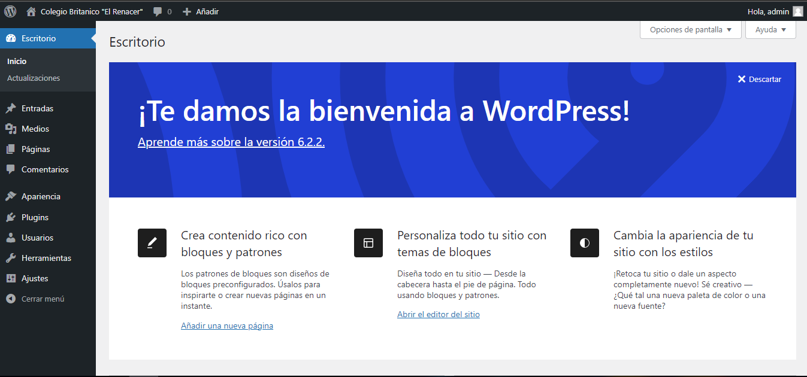

xampp
es un paquete de software libre, que consiste principalmente en el sistema de gestión de bases de datos
Panel de control wordpress

Felipe Florez Quintero
Grado noveno
Las bases de datos son un conjunto de datos que interactùan entre si